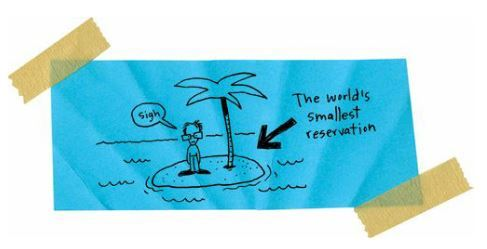
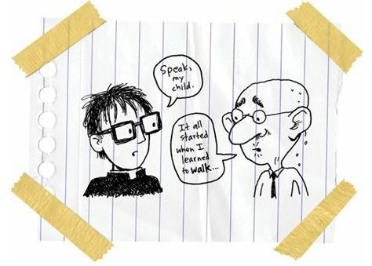
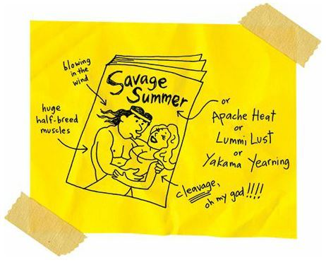
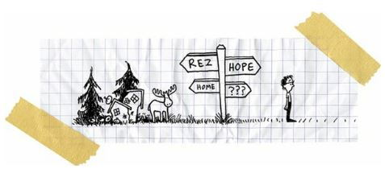

Hope Against Hope
Of course, I was suspended from school after I smashed Mr. P in the face, even though it was a complete accident.
Okay, so it wasn’t exactly an accident.
After all, I wanted to hit something when I threw that ancient book. But I didn’t want to hit somebody, and I certainly didn’t plan on breaking the nose of a mafioso math teacher.
“That’s the first time you’ve ever hit anything you aimed at,” my big sister said.
“We are so disappointed,” my mother said.
“We are so disappointed in you,” my father said.
My grandmother just sat in her rocking chair and cried and cried.
I was ashamed. I’d never really been in trouble before.
A week into my suspension, I was sitting on our front porch, thinking about stuff, contemplating, when old Mr. P walked up our driveway. He had a big bandage on his face.
“I’m sorry about your face,” I said.
“I’m sorry they suspended you,” he said. “I hope you know that wasn’t my idea.”
After I smashed him in the face, I figured Mr. P wanted to hire a hit man. Well, maybe that’s taking it too far. Mr. P didn’t want me dead, but I don’t think he would have minded if I’d been the only survivor of a plane that crashed into the Pacific Ocean.

At the very least, I thought they were going to send me to jail.
“Can I sit down with you?” Mr. P asked.
“You bet,” I said. I was nervous. Why was he being so friendly? Was he planning a sneak attack on me? Maybe he was going to smash me in the nose with a calculus book.
But the old guy just sat in peaceful silence for a long time. I didn’t know what to do or say, so I just sat as quietly as he did. That silence got so big and real that it felt like three people sat on the porch.
“Do you know why you hit me with that book?” Mr. P finally asked.
It was a trick question. I knew I needed to answer correctly or he’d be mad.
“I hit you because I’m stupid.”
“You’re not stupid.”
Wrong answer.
Shoot.
I tried again.
“I didn’t mean to hit you,” I said. “I was aiming for the wall.”
“Were you really aiming for the wall?”
Dang it.
He was, like, interrogating me.
I was starting to get upset.
“No,” I said. “I wasn’t aiming for anything really. Well, I was planning on hitting something, you know? Like the wall or a desk or the chalkboard. Something dead, you know, not something alive.”
“Alive like me?”
“Or like a plant.”
Mr. P had three plants in his classroom. He talked to those green things more often than he talked to us.
“You do know that hitting a plant and hitting me are two different things, right?” he asked.
“Yeah, I know.”
He smiled mysteriously. Adults are so good at smiling mysteriously. Do they go to college for that?
I was getting more and more freaked out. What did he want?
“You know, Mr. P, I don’t mean to be rude or anything, but you’re, like, freaking me out here. I mean, why are you here, exactly?”
“Well, I want you to know that hitting me with that book was probably the worst thing you’ve ever done. It doesn’t matter what you intended to do. What happens is what you really did. And you broke an old man’s nose. That’s almost unforgivable.”
He was going to punish me now. He couldn’t beat me up with his old man fists, but he could hurt me with his old man words.
“But I do forgive you,” he said. “No matter how much I don’t want to. I have to forgive you. It’s the only thing that keeps me from smacking you with an ugly stick. When I first started teaching here, that’s what we did to the rowdy ones, you know? We beat them. That’s how we were taught to teach you. We were supposed to kill the Indian to save the child.”
“You killed Indians?”
“No, no, it’s just a saying. I didn’t literally kill Indians. We were supposed to make you give up being Indian. Your songs and stories and language and dancing. Everything. We weren’t trying to kill Indian people. We were trying to kill Indian culture.”
Man, at that second, I hated Mr. P hard. I wished I had a whole dang set of encyclopedias to throw at him.
“I can’t apologize to everybody I hurt,” Mr. P said. “But I can apologize to you.”
It was so backward. I’d broken his nose but he was trying to apologize to me.
“I hurt a lot of Indian kids when I was a young teacher,” he said. “I might have broken a few bones.”
All of a sudden, I realized he was confessing to me.

“It was a different time,” Mr. P said. “A bad time. Very bad. It was wrong. But I was young and stupid and full of ideas. Just like you.”
Mr. P smiled. He smiled at me. There was a piece of lettuce stuck between his front teeth.
“You know,” he said. “I taught your sister, too.”
“I know.”
“She was the smartest kid I ever had. She was even smarter than you.”
I knew my sister was smart. But I’d never heard a teacher say that about her. And I’d never heard anybody say that she was smarter than me. I was happy and jealous at the same time.
My sister, the basement mole rat, was smarter than me?
“Well,” I said, “my mom and dad are pretty smart, too, so I guess it runs in the family.”
“Your sister wanted to be a writer,” Mr. P said.
“Really?” I asked.
I was surprised by that. She’d never said anything about that to me. Or to Mom and Dad. Or to anybody.
“I never heard her say that,” I said.
“She was shy about it,” Mr. P said. “She always thought people would make fun of her.”
“For writing books? People would have thought she was a hero around here. Maybe she could have made movies or something, too. That would have been cool.”
“Well, she wasn’t shy about the idea of writing books. She was shy about the kind of books she wanted to write.”
“What kind of books did she want to write?” I asked.
“You’re going to laugh.”
“No, I’m not.”
“Yes, you are.”
“No, I’m not.”
“Yes, you are.”
Jeez, we had both turned into seven-year-olds.
“Just tell me,” I said.
It was weird that a teacher was telling me things I didn’t know about my sister. It made me wonder what else I didn’t know about her.
“She wanted to write romance novels.”
Of course, I giggled at that idea.
“Hey,” Mr. P said. “You weren’t supposed to laugh.”
“I didn’t laugh.”
“Yes, you laughed.”
“No, I didn’t.”
“Yes, you did.”
“Maybe I laughed a little.”
“A little laugh is still a laugh.”
And then I laughed for real. A big laugh.
“Romance novels,” I said. “Those things are just sort of silly, aren’t they?”
“Lots of people—mostly women—love them,” Mr. P said. “They buy millions of them. There are lots of writers who make millions by writing romance novels.”
“What kind of romances?” I asked.
“She never really said, but she did like to read the Indian ones. You know the ones I’m talking about?”
Yes, I did know. Those romances always featured a love affair between a virginal white schoolteacher or preacher’s wife and a half-breed Indian warrior. The covers were hilarious:

“You know,” I said, “I don’t think I ever saw my sister reading one of those things.”
“She kept them hidden,” Mr. P said.
Well, that is a big difference between my sister and me. I hide the magazines filled with photos of naked women; my sister hides her tender romance novels that tell stories about naked women (and men).
I want the pictures; my sister wants the words.
“I don’t remember her ever writing anything,” I said.
“Oh, she loved to write short stories. Little romantic stories. She wouldn’t let anybody read them. But she’d always be scribbling in her notebook.”
“Wow,” I said.
That was all I could say.
I mean, my sister had become a humanoid underground dweller. There wasn’t much romance in that. Or maybe there was. Maybe my sister read romances all day. Maybe she was trapped in those romances.
“I really thought she was going to be a writer,” Mr. P said. “She kept writing in her book. And she kept working up the courage to show it to somebody. And then she just stopped.”
“Why?” I asked.
“I don’t know.”
“You don’t have any idea?”
“No, not really.”
Had she been hanging on to her dream of being a writer, but only barely hanging on, and something made her let go?
That had to be it, right? Something bad had happened to her, right? I mean, she lived in the fricking basement. People just don’t live and hide in basements if they’re happy.
Of course, my sister isn’t much different from my dad in that regard.
Whenever my father isn’t off on a drinking binge, he spends most of his time in his bedroom, alone, watching TV.
He mostly watches basketball.
He never minds if I go in there and watch games with him. But we never talk much. We just sit there quietly and watch the games. My dad doesn’t even cheer for his favorite teams or players. He doesn’t react much to the games at all.
I suppose he is depressed.
I suppose my sister is depressed.
I suppose the whole family is depressed.
But I still want to know exactly why my sister gave up on her dream of writing romance novels.
I mean, yeah, it is kind of a silly dream. What kind of Indian writes romance novels? But it is still pretty cool. I love the thought of reading my sister’s books. I love the thought of walking into a bookstore and seeing her name on the cover of a big and beautiful novel.
Spokane River Heat by Mary Runs Away.
That would be very cool.
“She could still write a book,” I said. “There’s always time to change your life.”
I almost gagged when I said that. I didn’t even believe that. There’s never enough time to change your life. You don’t get to change your life, period. Shit, maybe I was trying to write a romance novel.
“Mary was a bright and shining star,” Mr. P said. “And then she faded year by year until you could barely see her anymore.”
Wow, Mr. P was a poet.
“And you’re a bright and shining star, too,” he said. “You’re the smartest kid in the school. And I don’t want you to fail. I don’t want you to fade away. You deserve better.”
I didn’t feel smart.
“I want you to say it,” Mr. P said.
“Say what?”
“I want you to say that you deserve better.”
I couldn’t say it. It wasn’t true. I mean, I wanted to have it better, but I didn’t deserve it. I was the kid who threw books at teachers.
“You are a good kid. You deserve the world.”
Wow, I wanted to cry. No teacher had ever said anything so nice, so incredibly nice, to me.
“Thank you,” I said.
“You’re welcome,” he said. “Now say it.”
“I can’t.”
And then I did cry. Tears rolled down my cheeks. I felt so weak.
“I’m sorry,” I said.
“You don’t have to be sorry for anything,” he said. “Well, you better be sorry for hitting me, but you don’t have to feel bad about crying.”
“I don’t like to cry,” I said. “Other kids, they beat me up when I cry. Sometimes they make me cry so they can beat me up for crying.”
“I know,” he said. “And we let it happen. We let them pick on you.”
“Rowdy protects me.”
“I know Rowdy is your best friend, but he’s, he’s, he’s, he’s—,” Mr. P stuttered. He wasn’t sure what to say or do. “You know that Rowdy’s dad hits him, don’t you?”
“Yeah,” I said. Whenever he came to school with a black eye, Rowdy made sure to give black eyes to two kids picked at random.
“Rowdy is just going to get meaner and meaner,” Mr. P said.
“I know Rowdy has a temper and stuff, and he doesn’t get good grades or anything, but he’s been nice to me since we were kids. Since we were babies. I don’t even know why he’s been nice.”
“I know, I know,” Mr. P said. “But, listen, I want to tell you something else. And you have to promise me you’ll never repeat it.”
“Okay,” I said.
“Promise me.”
“Okay, okay, I promise I won’t repeat it.”
“Not to anyone. Not even your parents.”
“Nobody.”
“Okay, then,” he said and leaned closer to me because he didn’t even want the trees to hear what he was going to say. “You have to leave this reservation.”
“I’m going to Spokane with my dad later.”
“No, I mean you have to leave the rez forever.”
“What do you mean?”
“You were right to throw that book at me. I deserved to get smashed in the face for what I’ve done to Indians. Every white person on this rez should get smashed in the face. But, let me tell you this. All the Indians should get smashed in the face, too.”
I was shocked. Mr. P was furious.
“The only thing you kids are being taught is how to give up. Your friend Rowdy, he’s given up. That’s why he likes to hurt people. He wants them to feel as bad as he does.”
“He doesn’t hurt me.”
“He doesn’t hurt you because you’re the only good thing in his life. He doesn’t want to give that up. It’s the only thing he hasn’t given up.”
Mr. P grabbed me by the shoulders and leaned so close to me that I could smell his breath.
Onions and garlic and hamburger and shame and pain.
“All these kids have given up,” he said. “All your friends. All the bullies. And their mothers and fathers have given up, too. And their grandparents gave up and their grandparents before them. And me and every other teacher here. We’re all defeated.”
Mr. P was crying.
I couldn’t believe it.
I’d never seen a sober adult cry.
“But not you,” Mr. P said. “You can’t give up. You won’t give up. You threw that book in my face because somewhere inside you refuse to give up.”
I didn’t know what he was talking about. Or maybe I just didn’t want to know.
Jeez, it was a lot of pressure to put on a kid. I was carrying the burden of my race, you know? I was going to get a bad back from it.
“If you stay on this rez,” Mr. P said, “they’re going to kill you. I’m going to kill you. We’re all going to kill you. You can’t fight us forever.”
“I don’t want to fight anybody,” I said.
“You’ve been fighting since you were born,” he said. “You fought off that brain surgery. You fought off those seizures. You fought off all the drunks and drug addicts. You kept your hope. And now, you have to take your hope and go somewhere where other people have hope.”
I was starting to understand. He was a math teacher. I had to add my hope to somebody else’s hope. I had to multiply hope by hope.
“Where is hope?” I asked. “Who has hope?”
“Son,” Mr. P said. “You’re going to find more and more hope the farther and farther you walk away from this sad, sad, sad reservation.”
